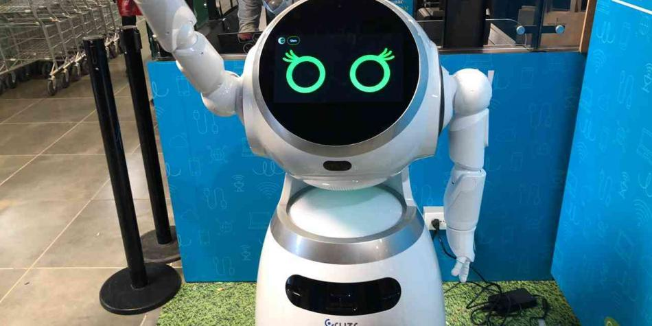

Noticias
Las profesiones que podrían desaparecer por la Inteligencia Artificial
Uno de los interrogantes que desde siempre ha surgido con el desarrollo de la tecnología es si en algún punto esto puede acabar con puestos de empleo, debido a la automatización o la implementación de robots.
LEER NOTICIA

El tráfico de internet aumenta más del 66 % en la actual coyuntura
Una de las preguntas que surgieron cuando el país comenzó la cuarentena estricta por la pandemia de covid-19, llevando a que miles de personas se quedaran en sus hogares y desempeñaran desde allí labores de trabajo y educación virtual.
LEER NOTICIA
¿Que tan perjudiciales pueden llegar a ser para la salud las redes 5G?
Los temores sobre los efectos del 5G en nuestra salud llegaron antes incluso de que desplegara sus redes nuestras ciudades y, con la pandemia, los conspiranoicos han dado un nuevo giro a estos miedos: el coronavirus se expande a través de los móviles.
LEER NOTICIA

Supermercados colombianos evolucionan con robots y escáner de frutas
Los robots y la Inteligencia Artificial (IA) dentro de los supermercados llegaron a Colombia este jueves 26 de noviembre. Una de las primeras cadenas que tendrá este tipo de tecnología es Carulla.
LEER NOTICIA
Developer Frontend
Cristian Mauricio Navarro León
Institucion educativa: Universidad Militar Nueva Granada, Edad: 23 años, Pasatiempos: Deporte y videojuegos.
Tester
William Fernando Prieto Velandia
Profesión: Ingeniero químico
Institución educativa: Universidad Industrial de Santander
Edad: 30 años
Pasatiempo: Lectura y videojuegos
Interesado en ampliar los conocimientos en programación para impulsar las industrias de mi región
Developer Backend
Henry García Ospina
Una de mis pasiones es conocer sobre tecnología, especificamente sobre desarrollo de softwarte, me encuentro finalizando la ingenería de sistemas en el ITM de Medellín, me gusta oir música clásica, baladas y música americana de los 60s, 70s y 80s.
Software Architect
Oscar Fabian Contreras Navas
Ingeniero químico de la Universidad Industrial de Santander. 28 años. Con afinidad e interés por la simulación computacional en el campo ingenieril. Bilingüe, Inglés y Español, actualmente estudiando Francés.
Software Analyst
Julio Nel Vásquez Vanegas
Tengo 22 años, desde joven siempre me ha llamado la atención la tecnología. Mis pasiones son la electrónica y la programación. Mis pasatiempos son la lectura y el deporte.